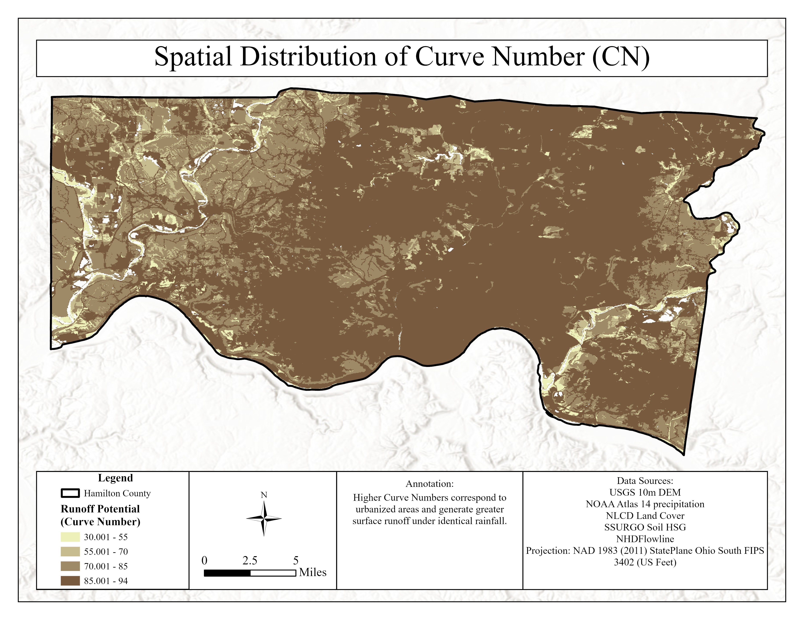
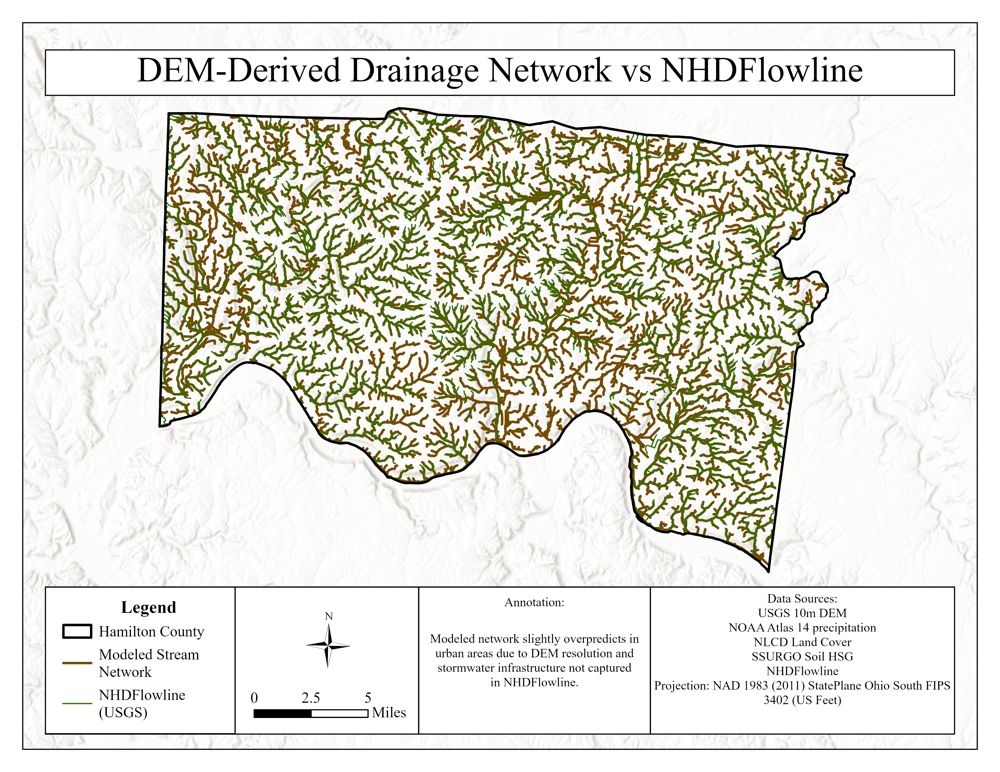
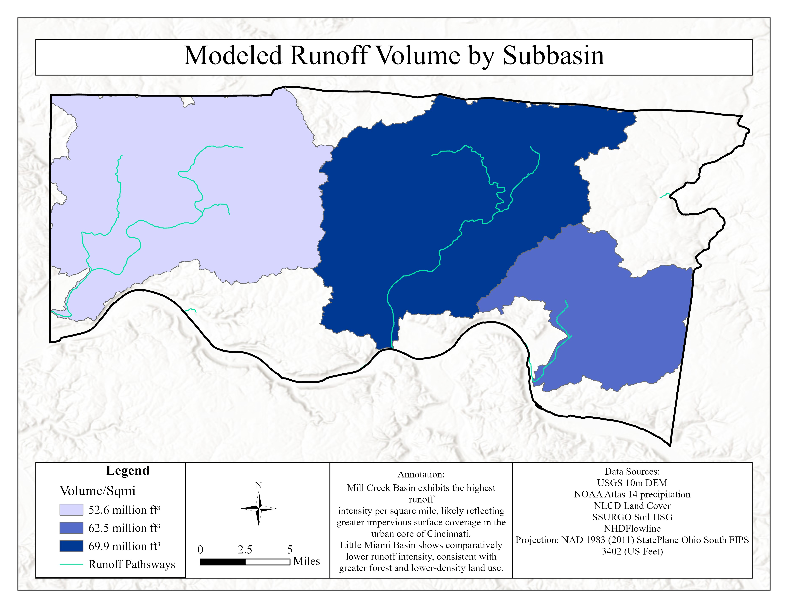

Hamilton Stormwater Runoff
Assessing local topographical data to model stormwater flow and identify potential ecological vulnerabilities in Hamilton County, Ohio.
The Problem: Urban Drainage Estimation
Storm runoff is a primary driver of flooding and water-quality impairment in urbanizing watersheds because land-cover change replaces infiltrating surfaces with impervious cover. Engineers frequently estimate event-scale direct runoff using the Soil Conservation Service Curve Number (SCS-CN) method.
This project applies the SCS-CN method with a spatially distributed GIS implementation to estimate and compare storm runoff production and routing across major drainage areas within Hamilton County.

Hydrologic Modeling Methodology
A countywide curve-number surface was developed by combining NLCD land-cover categories with SSURGO hydrologic soil groups. A 10-year 24‑hour design storm precipitation depth of 3.97 inches was retrieved from NOAA Atlas 14. Storm runoff depth was computed at the raster-cell scale using standard SCS-CN equations, including the calculation of potential maximum retention and initial abstraction.
Terrain-based runoff routing and subbasin delineation were performed using a USGS 10m DEM. The DEM was filled, a flow direction raster was computed using the D8 method, and flow accumulation was calculated to define runoff concentration pathways.

Subbasin Comparison Results
Watersheds were delineated to represent three dominant drainage exits: the Mill Creek system, the Great Miami-facing drainage area, and the Little Miami-facing drainage area. Subbasin runoff totals were computed by zonal summation of the runoff volume raster.
The highly urbanized Mill Creek subbasin produced the highest total runoff volume (8.42 billion cubic feet) and the highest runoff intensity at 70.0 million ft³/sq mi. The other two basins showed lower intensity consistent with less continuous impervious cover.
